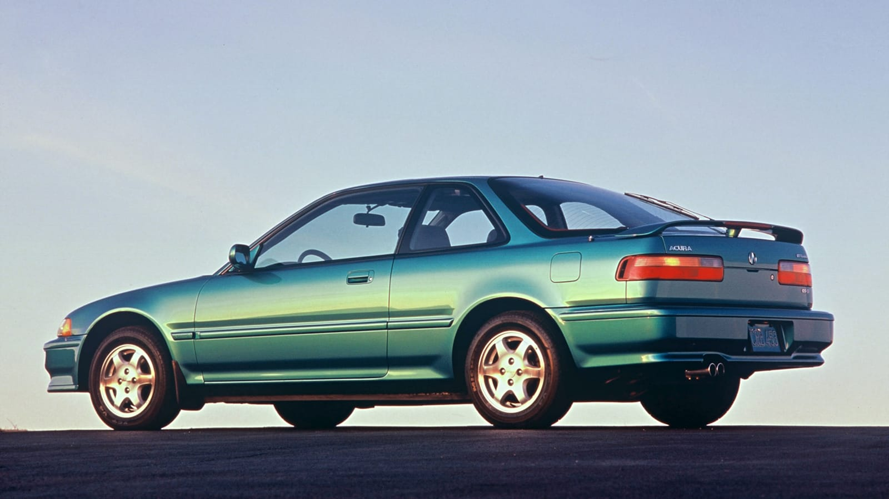
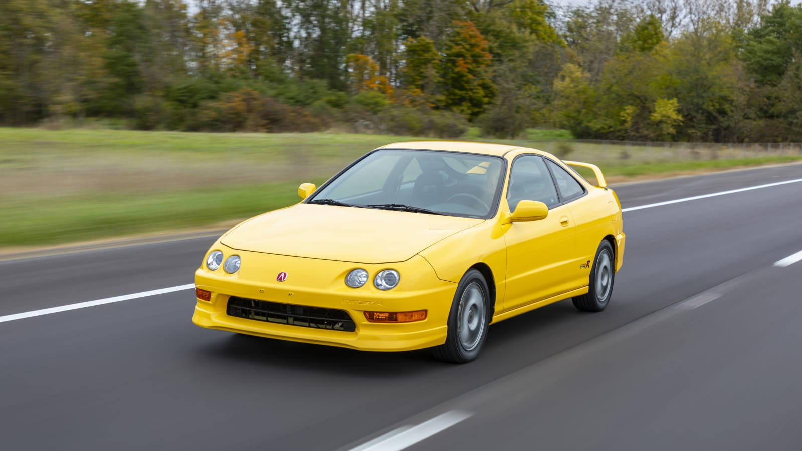
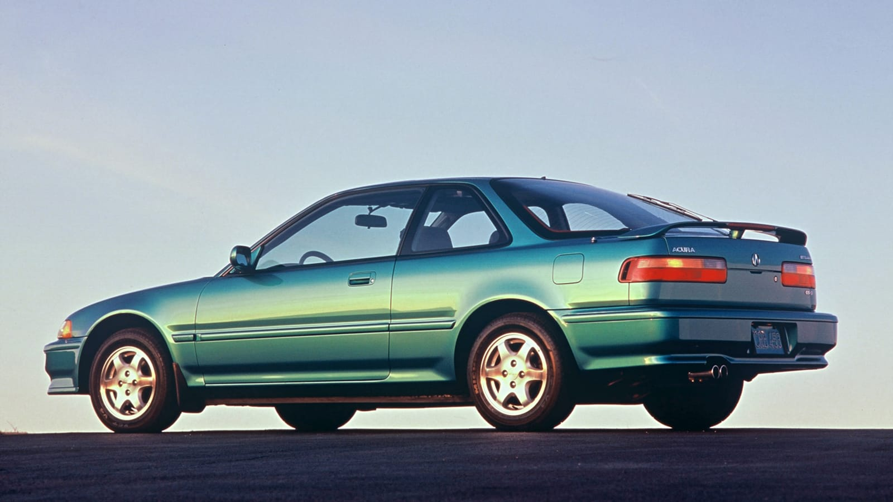
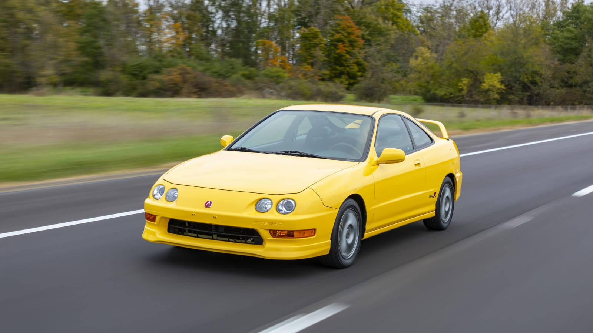

Born and raised on September 20, 1989, in Los Angeles CA. As a kid I enjoyed competing in sports and video games, I would play basketball all day until the sun came down, then the video games would come out. I spent long nights on the computer. At a young age, I would complete computer repairs for friends and family for little to no money. Any earnings I would get went towards making my computer more efficient. I would research all the best products to make sure I would get the best bang for my buck. This is where I grew an interest in building things, always having a knack for making things work properly. As I got older I grew a passion for cars helping my father work on his 1959 Volkswagen Bus and a 1972 Ford Mustang. After high school, I went straight to Universal Technical Institute to begin my career as Automotive Technician. I began as a Lube Tech at Honda and somehow managed to become a Qualified Line Technician for Mercedes Benz, achieving all certification needed along the way. After just about 10 years in the Automotive Field, I noticed that Veteran Technicians would commonly complain about the body pains caused by the industry. I soon realized that maybe I do not want to be 40 and in physical pain. With my great work ethic, customer service skills, and automotive hands-on experience I was able to land a desk job at Farmers Insurance as an Automotive Property Damage Field Appriser.
Now one might wonder, why I would want to change my current career?
Yet the answer is very simple. I have a knack for making things work properly. A full-stack developer knows only that, imagine the passion and possibilities that will come from being on the same team of engineers for a web-based video game?